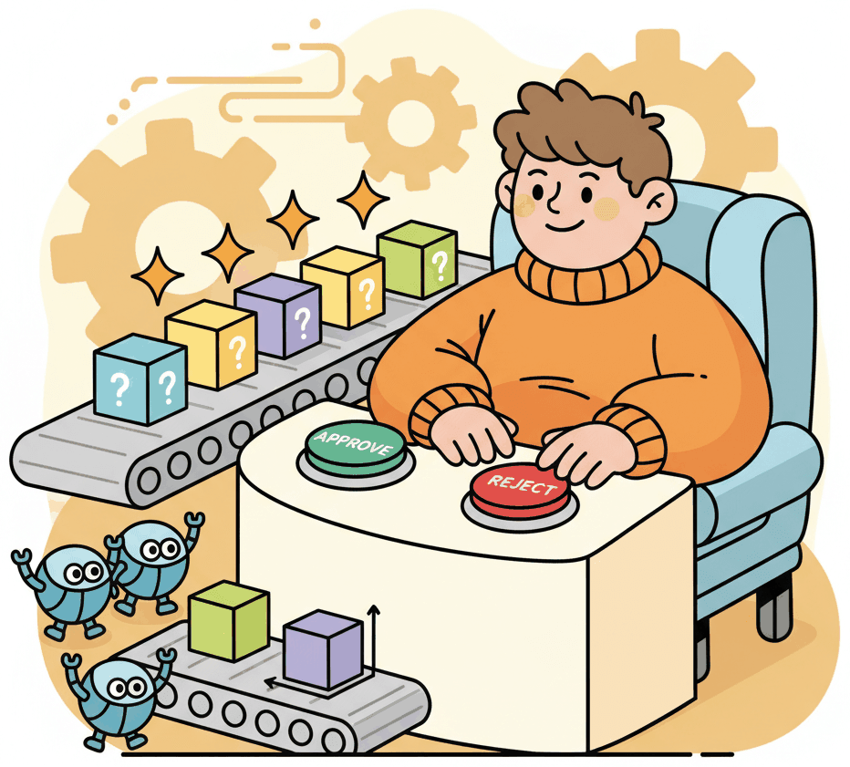

"Full autonomy is a spectrum, not a switch. The wisest agents know when to ask for help."
Census, Judiciously Supervised AI Agent
Full autonomy is a spectrum, not a switch, and the wisest agent systems know exactly where on that spectrum each action falls. LLMs hallucinate, tools fail, and edge cases are inevitable. Human-in-the-loop (HITL) patterns insert human judgment at critical decision points without turning the agent into a glorified suggestion engine. This section covers graduated autonomy (auto-approve low-risk, flag medium-risk, require approval for high-risk), interrupt-and-resume patterns in LangGraph, and the UX design of approval interfaces. The agent safety principles from Chapter 25 complement these patterns with defense-in-depth strategies.
Prerequisites
This section builds on tool use and protocols from Chapter 27 and agent foundations from Chapter 26.

23.3.1 Why Human-in-the-Loop Matters
Fully autonomous agents are appealing in demos but dangerous in production. LLMs hallucinate, tools fail, and edge cases are inevitable. Human-in-the-loop (HITL) patterns insert human judgment at critical decision points, creating a safety net that catches errors before they cause real-world harm. The goal is not to have humans review every action (that defeats the purpose of automation) but to identify the specific moments where human oversight provides the most value.
The design challenge is finding the right granularity of human oversight. Too much oversight turns the agent into a glorified suggestion engine that requires human approval for every step. Too little oversight allows the agent to take irreversible actions based on incorrect reasoning. The optimal approach is graduated autonomy: the agent handles routine decisions independently, flags uncertain decisions for human review, and always requires human approval for high-consequence actions.
Graduated autonomy requires a classification system that assigns risk levels to agent actions. Low-risk actions (reading data, searching, summarizing) are auto-approved. Medium-risk actions (sending emails, updating records) are logged and can be reviewed after the fact. High-risk actions (deleting data, making purchases, modifying access controls) require explicit human approval before execution. The risk classification should be defined per-tool in the agent's configuration, not left to the agent's judgment.
The most effective HITL patterns are asynchronous. Rather than blocking the agent until a human responds, queue the decision, notify the human, and let the agent continue working on other tasks (or explicitly pause and save state). Synchronous HITL creates bottlenecks: if the human reviewer is in a meeting, the entire workflow stalls. Asynchronous HITL with checkpointing lets the workflow resume instantly when the human approves, even hours later.
23.3.2 Approval Workflow Patterns
This snippet implements a human-in-the-loop approval workflow that pauses agent execution for user confirmation before sensitive actions.
from langgraph.graph import StateGraph, END
from langgraph.checkpoint.sqlite import SqliteSaver
class ApprovalState(TypedDict):
task: str
agent_action: dict
risk_level: str
approved: Optional[bool]
result: Optional[str]
def classify_risk(state: ApprovalState) -> dict:
action = state["agent_action"]
# Risk classification based on action type
if action["type"] in ["read", "search", "summarize"]:
return {"risk_level": "low"}
elif action["type"] in ["send_email", "update_record"]:
return {"risk_level": "medium"}
else:
return {"risk_level": "high"}
def route_by_risk(state: ApprovalState) -> str:
if state["risk_level"] == "low":
return "auto_execute"
elif state["risk_level"] == "medium":
return "execute_and_log"
return "request_approval"
def request_approval(state: ApprovalState) -> dict:
# Send notification to human reviewer
# The graph will pause here until the human responds
send_approval_request(
action=state["agent_action"],
context=state["task"],
channel="slack", # or email, dashboard, etc.
)
return {"approved": None} # Will be updated by human input
def check_approval(state: ApprovalState) -> str:
if state["approved"] is True:
return "execute"
elif state["approved"] is False:
return "reject"
return "wait" # Still waiting for human response
graph = StateGraph(ApprovalState)
graph.add_node("classify", classify_risk)
graph.add_node("auto_execute", execute_action)
graph.add_node("execute_and_log", execute_and_log_action)
graph.add_node("request_approval", request_approval)
graph.add_node("execute", execute_action)
graph.add_node("reject", handle_rejection)
graph.set_entry_point("classify")
graph.add_conditional_edges("classify", route_by_risk)
graph.add_conditional_edges("request_approval", check_approval)
graph.add_edge("auto_execute", END)
graph.add_edge("execute_and_log", END)
graph.add_edge("execute", END)
graph.add_edge("reject", END)
# Checkpointer enables pause/resume for human approval
workflow = graph.compile(checkpointer=SqliteSaver.from_conn_string("approvals.db"))23.3.3 Trust Calibration and Escalation
As an agent demonstrates reliability over time, its autonomy level can be increased. A new agent might require human approval for all write operations. After 100 successful executions with zero errors, medium-risk actions could be auto-approved with logging. This trust calibration should be data-driven: track the agent's decision accuracy across categories and adjust the risk thresholds based on measured reliability.
The goal of HITL is to shrink itself over time, not to persist permanently. Every human approval should be an opportunity to learn. If a human consistently approves a certain type of action, that action's risk level should be reclassified downward. If a human occasionally rejects an action, analyze why and improve the agent's judgment for that case. The best HITL systems include a feedback loop: human decisions flow back into the agent's training data (see RLHF in Section 20.2), prompt refinement, or tool constraint adjustment. Over months, a well-designed system should see the approval rate converge toward near-zero human interventions for routine cases, with humans focusing only on genuinely novel or ambiguous situations.
Escalation patterns define what happens when the agent encounters a situation it cannot handle. The simplest escalation is "stop and ask a human." More sophisticated patterns include: escalating to a more capable model (try GPT-4o-mini first, escalate to o3 for complex cases), escalating to a specialized agent (route from a general agent to a domain expert), or escalating with context (provide the human with the agent's reasoning, attempted actions, and error analysis to speed up human resolution).
Who: A customer experience director at a D2C subscription company with a 12-person support team handling 600 tickets per day.
Situation: The company deployed an AI support agent to reduce response times, but leadership was uncomfortable giving the agent unsupervised access to refund processing and account modifications from day one.
Problem: Full human review of every agent response (the cautious approach) limited throughput to 50 tickets per day per reviewer, creating a bottleneck worse than the original problem. But skipping review entirely risked sending incorrect refunds or making unauthorized account changes.
Decision: The team implemented a progressive trust schedule. Week 1: all responses human-reviewed before sending (approval rate: 78%). Week 4: FAQ answers and status updates auto-sent; refunds under $50 and account changes required approval (human reviews 40%). Week 12: all standard responses auto-sent; only refunds over $200, account closures, and engineering escalations required approval (human reviews 8%). A weekly accuracy audit on random samples served as the safety net, with any category dropping below 95% accuracy reverting to human review.
Result: The agent scaled from 50 to 500 tickets per day over 12 weeks with zero customer-reported errors on auto-sent responses. The support team shifted from reviewing every response to handling only the genuinely complex cases that required human judgment.
Lesson: Progressive trust with automatic rollback on quality drops lets organizations capture guardrail-protected automation gains without taking an all-or-nothing bet on agent reliability.
Exercises
List three scenarios where human-in-the-loop is essential for an agent system and three where it would be unnecessary overhead. What criteria distinguish the two categories?
Answer Sketch
Essential: financial transactions above a threshold, medical recommendations, irreversible actions (deleting data). Unnecessary: FAQ lookups, formatting text, fetching public information. The key criteria are: reversibility (can the action be undone?), consequence severity (what is the cost of an error?), and confidence level (how certain is the agent?).
Implement a simple approval workflow where an agent pauses before executing high-risk actions and requests human approval via a callback function. The agent should continue automatically for low-risk actions.
Answer Sketch
Classify each tool call as high-risk or low-risk using a predefined mapping. For high-risk calls, serialize the pending action to a queue and wait for a human response (approve/reject). If approved, execute and continue. If rejected, ask the agent to find an alternative approach. For low-risk calls, execute immediately without pausing.
Describe a progressive trust system where an agent starts with low autonomy and earns more autonomy over time as it demonstrates competence. What metrics would you track to adjust the trust level?
Answer Sketch
Track: task completion rate, error rate, human override frequency, and severity of errors when they occur. Start with approval required for all actions. After N successful tasks with zero overrides, promote to approval-required-only-for-high-risk. After M more successes, promote to post-hoc review only. Any serious error triggers a trust level decrease. This mirrors how organizations onboard new employees.
Write a Python function should_escalate(agent_state, confidence, action_type) that decides whether to escalate to a human based on the agent's confidence score, the action type, and the number of retries attempted.
Answer Sketch
Escalate if: confidence < 0.7, or action_type is in HIGH_RISK_ACTIONS, or retry_count > 2, or the accumulated cost exceeds a budget threshold. Return a tuple of (should_escalate: bool, reason: str) so the escalation message includes context for the human reviewer.
How should an agent incorporate human feedback from approval workflows into its future behavior? Discuss the tension between learning from corrections and maintaining consistency.
Answer Sketch
Options: (1) Store corrections as episodic memories for retrieval in similar situations. (2) Update the system prompt with learned rules. (3) Fine-tune on correction examples periodically. The tension: too much adaptation risks inconsistency (different behavior for similar cases), while too little adaptation wastes the feedback. A balanced approach stores corrections as retrievable examples and periodically reviews them for patterns that warrant system prompt updates.
- Human-in-the-loop is essential for high-stakes agent tasks where mistakes are costly or irreversible.
- Common HITL patterns include approval gates, escalation, review queues, and collaborative editing.
- The right level of human involvement depends on risk tolerance: fully autonomous for low-stakes, approval gates for high-stakes.
Emergent communication protocols. When multiple LLM agents interact, they can develop shared conventions, shorthand, and even novel communication strategies not present in their training data. Understanding, controlling, and leveraging these emergent behaviors is a growing research area, with implications for both efficiency and safety.
Scaling agent teams beyond small groups. Most multi-agent research involves 2 to 10 agents. Scaling to hundreds or thousands of agents introduces challenges in coordination overhead, message routing, role differentiation, and collective decision-making that remain largely unexplored with LLM-based agents.
Formal verification of multi-agent systems. Proving correctness or safety properties of multi-agent LLM workflows is extremely difficult because the agents are stochastic. Researchers are investigating hybrid approaches that combine traditional formal methods with probabilistic guarantees for LLM-based components.
Agent societies and persistent worlds. Long-running simulations where agents maintain memory, form relationships, and adapt their behavior over time reveal both the capabilities and failure modes of LLM agents. These simulations serve as testbeds for studying cooperation, deception, and social dynamics in artificial populations.
- Generative Agents (Park et al., 2023): Simulated a town of 25 LLM agents with memory, reflection, and planning, demonstrating emergent social behaviors such as organizing events and spreading information.
- AutoGen (Wu et al., 2023): Microsoft framework for multi-agent conversation with customizable interaction patterns, enabling complex workflows through structured agent dialogues.
- MetaGPT (Hong et al., 2023): Multi-agent framework that encodes Standardized Operating Procedures into agent roles, showing that structured role assignment improves software development task performance.
- AgentVerse (Chen et al., 2023): Platform for studying group dynamics among LLM agents, finding that collaborative multi-agent setups outperform single agents on reasoning and creative tasks.
Show Answer
Agents can make confident mistakes, misunderstand ambiguous instructions, or take irreversible actions. Human oversight provides a safety net for high-stakes decisions, enables course correction before costly errors, and builds user trust through transparency and control.
Show Answer
Approval gates (agent pauses for human approval before executing critical actions), escalation (agent hands off to a human when confidence is low), review queues (agent outputs are batched for human review), and collaborative editing (human and agent co-author outputs iteratively).
- Park et al. (2023). "Generative Agents: Interactive Simulacra of Human Behavior." UIST 2023. Created a virtual town of 25 LLM-powered agents with memory, reflection, and planning capabilities, demonstrating emergent social behaviors like coordinating events and forming relationships.
- Wu et al. (2023). "AutoGen: Enabling Next-Gen LLM Applications via Multi-Agent Conversation." arXiv:2308.08155. Introduced a framework for building multi-agent systems through conversational interaction patterns, supporting flexible agent topologies and human-in-the-loop workflows.
- Hong et al. (2023). "MetaGPT: Meta Programming for a Multi-Agent Collaborative Framework." ICLR 2024. Assigned distinct roles (product manager, architect, engineer) to LLM agents and used structured artifacts as communication protocols, significantly improving multi-agent software development quality.
- Li et al. (2023). "CAMEL: Communicative Agents for 'Mind' Exploration of Large Language Model Society." NeurIPS 2023. Proposed inception prompting for role-playing between agents, enabling autonomous cooperation on tasks through structured dialogues without human intervention at each turn.
- Chen et al. (2023). "AgentVerse: Facilitating Multi-Agent Collaboration and Exploring Emergent Behaviors." ICLR 2024. Studied how groups of LLM agents can dynamically adjust team composition and collaborate more effectively than single agents, providing insights into when multi-agent approaches outperform solo agents.
- Du et al. (2023). "Improving Factuality and Reasoning in Language Models through Multiagent Debate." arXiv:2305.14325. Showed that having multiple LLM instances debate and critique each other's responses substantially improves factual accuracy and reasoning, establishing debate as a core multi-agent pattern.
What Comes Next
In Chapter 29: Specialized Agents, we shift from general multi-agent patterns to domain-specific agent architectures for code generation, web browsing, computer use, and research.